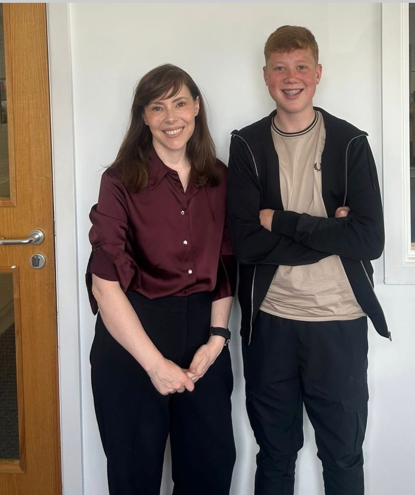
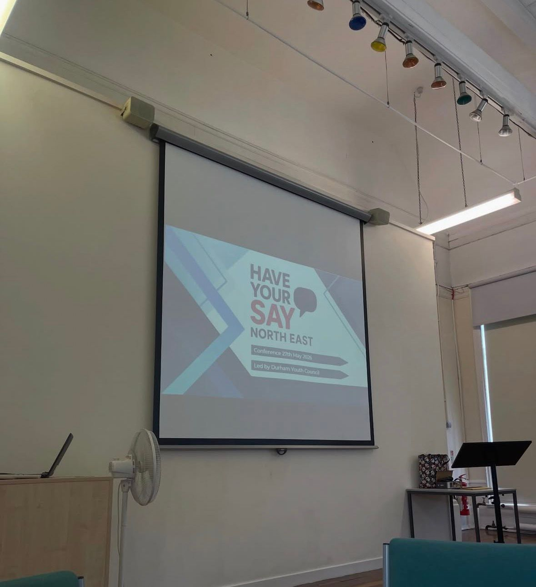
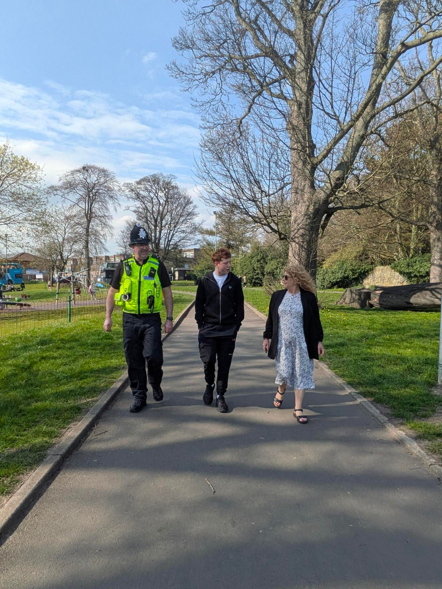

Partnership with Emma Foody MP
I am pleased to share that I am actively working alongside the MP for Cramlington and Killingworth, dedicated to making sure that the voices, views, and ideas of young people across our area are not just listened to, but truly understood and acted upon. Young people have so much to contribute to our community, and their experiences and perspectives are vital when it comes to shaping the decisions that affect their lives, their education, and their future opportunities.
By collaborating closely together, we aim to create meaningful ways for young people to engage, share what matters most to them, and see real change happen locally. I am very much looking forward to working with Emma on this important shared goal, and I am confident that through our partnership we can make change with a positive, lasting difference for young people right here in Northumberland.

Have Your Say Conference
Over the past month, I have continued representing young people across Northumberland by attending the Have Your Say Conference, where I worked with other Members of Youth Parliament from across the North East to discuss the issues that matter most to young people and how we can work together to create positive change. Survey data highlighted that mental health and wellbeing support remains one of the biggest priorities for young people, and I also supported the Move Without Limits campaign, which promotes the benefits of spending more time outdoors, with research showing that an extra 60 minutes outdoors can reduce depressive symptoms by 10%.

Cramlington Walkabout
I met with Susan Dungworth, the Police and Crime Commissioner (PCC), to discuss tackling anti-social behaviour and creating more opportunities and safe spaces for young people, linking directly to one of my manifesto pledges to improve activities and support across Northumberland.
I also visited the new pump track at Alexandra Park, speaking with local students about their ideas for improving the area, and met with Emma Foody to discuss support for young people.

Alexandra Park - new Pump Track
There are some exciting things coming to Cramlington! The new pump track in Cramlington is finally here - part of the plan to give kids more positive options, more places to ride, and more ways to stay active. Proper investment in young people and the future of our town. Let's make the most of it! This new pump track officially opened in Alexandra Park on Wednesday 27th May 2026 and the turnout was excellent - with young people from all over Cramlington and even further afield coming to try out the new track. It really is a great new facility for Cramlington!